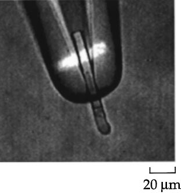
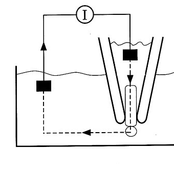
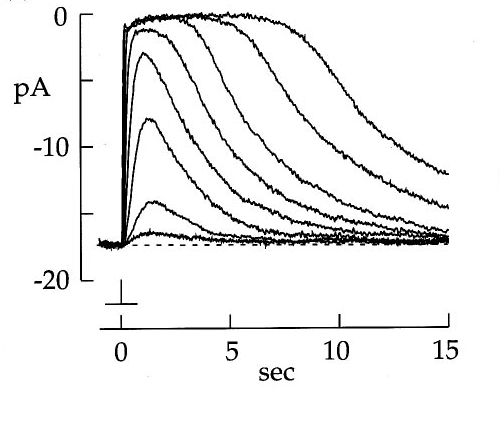
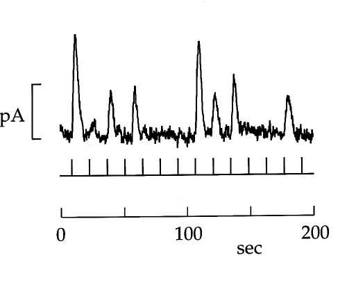
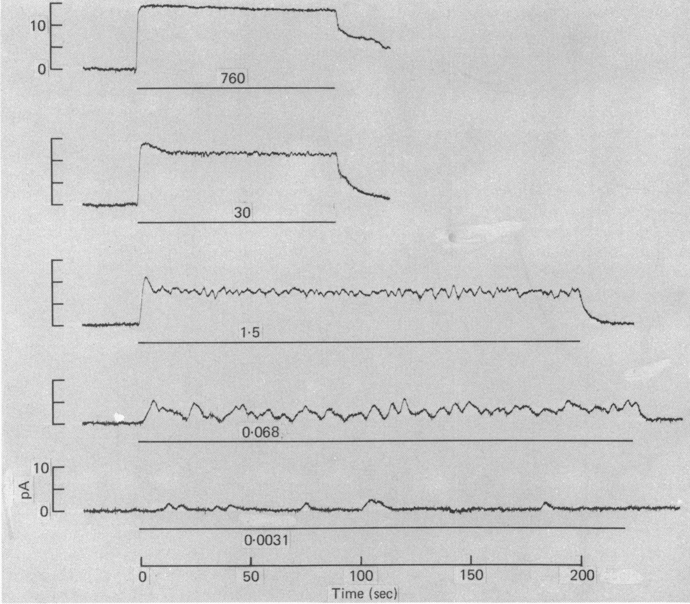
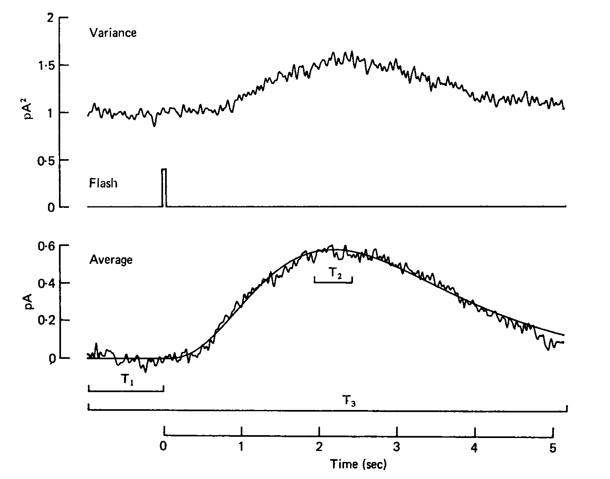
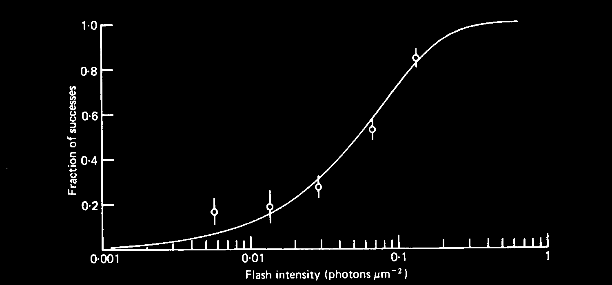

http://bit.ly/Phys141_6
Rod cell
Outer segment
Transduces light into signal
Inner segment
Keeps the cell alive
Synaptic terminal
Transmits responses to retina
Dark currents
Na+ enters outer segment
Current loop is completed by outward movement of K+ in inner segment
Current produces -40 mV between inside and outside of cell
Light response
Photons close channels in outer segment
Circulating current decreases
Lower membrane voltage
Lower synaptic release
Suction Electrode Recordings

Electrode collects the current entering the outer segment
→ current changes can be measured.
Suction Electrode Recordings

Current flows through an electrode in bath, through a current-measuring amplifier, into suction electrode
→ changes in outer-segment current can be measured
Suction Electrode Recordings

Smallest response corresponds to single photon absorption
Suction Electrode Recordings

Quantal responses to individual dim flashes
→ absorption of 0, 1, or 2 photons
Quantal responses at low levels

Ordinate → outward change in membrane current from darkness.
Bars → duration of light stimuli
Numbers → intensities in photons μ-2 sec-1
Quantal responses at low light levels
Stimulation with 40 dim flashes
→ 20 msec flashes
→ 0.029 photons μm-2 at 500nm
Considerable response variation
→ No response in many trials
→ Small response of $\sim$1 pA in some trials
→ Occasional larger response
Quantal responses at low light levels
Left: 0.029 photons μm-2
Right: 0.014 photons μm-2
Response amplitude histograms
→ Peaks at 0 pA and at $\sim$1 pA
Criterion for success/failure
→ arrow between peaks
→ Left: failure in 58/99 trials
→ Right: failure in 44/52 trials
Quantal responses at low light levels
Left: 0.029 photons μm-2
Right: 0.014 photons μm-2
If absorption is Poisson-distributed, the probability $P(k)$ of absorptions is:
\[ P(k) = \frac{e^{-\mu}\mu^k}{k!} \]
μ → mean number of absorptions.
Probability of failure is $P(k=0)$
→ $P(k= 0)=e^{-\mu}$
→ For $P(k=0)=58/99$, μ = 0.53
Estimating single photon responses
From visual inspection of the histogram:
centre of the first peak is $a\sim$ 1.2 pA
From mean current response and mean number of absorptions
$\left< i \right>$ = 0.56 pA
$\mu=0.53$
$a\sim$1.06 pA
From fluctuations in current response
Estimate variance in current at each instant after flash: \[ \sigma^2 = \left< i^2 (t) \right> - \left< i(t) \right>^2 \] After each flash, time-varying current is proportional to number of absorbed photons: \[ i(t) = n a (t) \] Assuming Poisson distribution of events, \[ \left< n^2 \right> - \left< n \right>^2 = \left< n \right> \] Variance in response amplitude should be related to the mean: \[ \sigma^2=\left< i \right> a \]
Fluctuation analysis

Ensemble average and variance of 99 flash responses
Measured variance =
variance in photon-induced current ($\sim$0.5 pA2) + variance in noise floor ($\sim$1 pA2)
Variance adds
The variance of the outcome, $X$, of a random process is the expectation value of its square, $X^2$, minus the square of the expectation value of its mean:
\[ \operatorname {Var} (X)=\left< X^{2} \right> -\left< X \right> ^{2}\]
Consider the sum of two independent random variables, $X$ and $Y$:
\[ \operatorname {Var} (X+Y)= \left< X^{2} \right> +2 \left< XY \right> + \left< Y^2 \right> - \left( \left< X \right> ^2 + 2 \left< X \right> \left< Y\right> +\left< Y \right>^2 \right) \]
For independent random variables, $\left< XY \right> = \left< X \right> \left< Y \right>$
So the variance of the sum is the sum of the variances:
\[ \operatorname {Var} (X+Y)= \operatorname {Var} (X)+\operatorname {Var} (Y) \]
Frequency of seeing in a single rod
A single photoisomerization is assumed to elicit a quantal response.
Mean number of photoisomerizations $\mu$ should be proportional to light intensity
\[ \mu = Ai \]
where $i$ is flash intensity and $A$ is an effective cross-section of the outer segment.
The probability of success, i.e., the probability that a rod 'sees' a photon, is
\[ P_{see} = \sum_{k=1}^{\infty} \frac{e^{-\mu}\mu^k}{k!} \]
The probability of seeing a photon is also $1-P(0)$
\[ P(k = 0) = 1 - e^{-Ai} \]
Frequency of seeing in a single rod

\[ P(k = 0) = 1 - e^{-Ai} \]
$A = 12.7 \mu m^2$